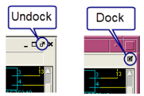

Examining LVS Comparison Results
Prerequisites
An SVDB containing LVS Comparison Results. See “Rule File Requirements for Examining Results with Calibre RVE for LVS”.
The layout database for your LVS run.
A layout viewer with an interface to Calibre RVE. See “Connection to a Design Tool”.
Procedure
- (Optional) The detailed view
(bottom pane) displays only the first 10 results in a category by
default. If there are more than 10 results, you can click to view the
next group of results, as shown below.
You can change the number of results displayed with the setting “Show Detailed Results” (
 Options tab, LVS/PERC/PEX category).
Options tab, LVS/PERC/PEX category). - In the detailed view, click
an element in blue or red text to display the element in the internal
schematic viewer. The design element is also highlighted in your layout
viewer. (See Figure 1, Figure 1)
In the internal schematic viewer, use the
 zoom
to fit navigation icon to resize and center the image if necessary.
You may also need to move and resize the windows within the main
session window.
zoom
to fit navigation icon to resize and center the image if necessary.
You may also need to move and resize the windows within the main
session window. You can choose the arrangement of the schematic windows from the Window menu. The schematic viewer windows can be undocked and docked from the main session window with the controls shown at right. The selection Window > Dock All returns all undocked windows to the main display.
